Nasze realizacje
Zdjęcia robione telefonem na budowie, w trakcie i po zakończeniu prac. Kliknij, żeby powiększyć.
 Zwody poziome na attyce dachu płaskiego
Zwody poziome na attyce dachu płaskiego Iglica odgromowa na kalenicy dachu skośnego
Iglica odgromowa na kalenicy dachu skośnego Przewód odgromowy na wspornikach – dachówka karpiówka
Przewód odgromowy na wspornikach – dachówka karpiówka
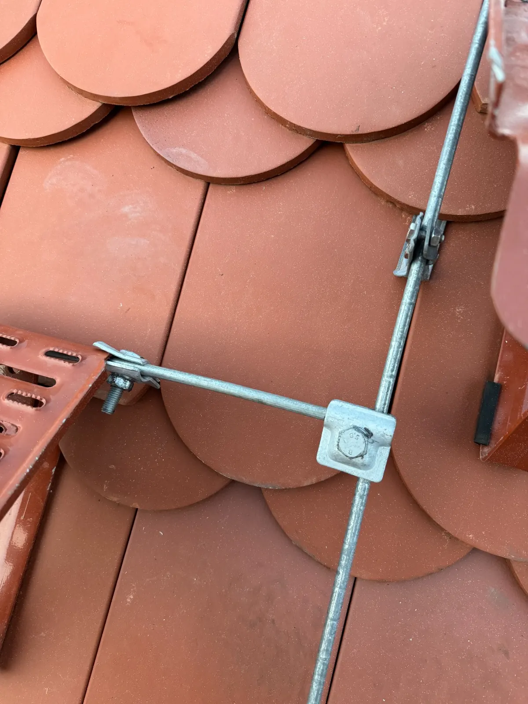
Połączenie krzyżowe zwodów na dachu z karpiówki Zwód poprowadzony przy panelach fotowoltaicznych na dachu płaskim
Zwód poprowadzony przy panelach fotowoltaicznych na dachu płaskim
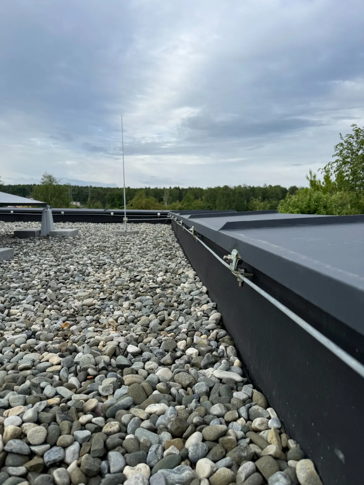
Maszt odgromowy przy attyce, dach płaski z otoczakami Maszt odgromowy na dachu płaskim
Maszt odgromowy na dachu płaskim Maszt na betonowej podstawie wolnostojącej
Maszt na betonowej podstawie wolnostojącej
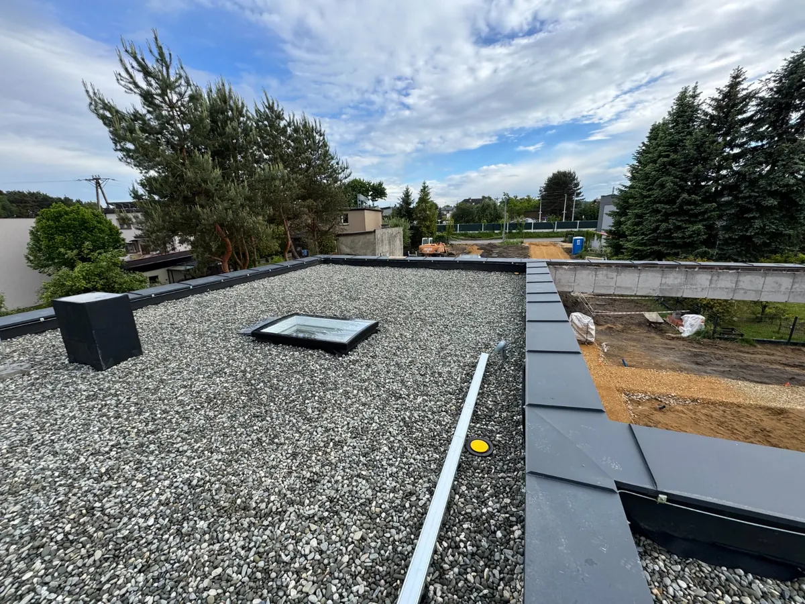
Instalacja odgromowa dachu płaskiego z wyłazem Okablowanie domu w stanie surowym
Okablowanie domu w stanie surowym Przepust przewodów zasilających przez ścianę
Przepust przewodów zasilających przez ścianę Złącze z rozłącznikiem głównym
Złącze z rozłącznikiem głównym Opisane przewody przed podłączeniem rozdzielnicy
Opisane przewody przed podłączeniem rozdzielnicy Puszka z oznaczeniem obwodu i złączkami
Puszka z oznaczeniem obwodu i złączkami Rozdzielnica natynkowa z ochroną przeciwprzepięciową
Rozdzielnica natynkowa z ochroną przeciwprzepięciową Rozdzielnica natynkowa – rzędy aparatów modułowych
Rozdzielnica natynkowa – rzędy aparatów modułowych Rozdzielnica wysoka po montażu
Rozdzielnica wysoka po montażu Rozdzielnica z opisanymi obwodami
Rozdzielnica z opisanymi obwodami Rozdzielnica podtynkowa w trakcie montażu
Rozdzielnica podtynkowa w trakcie montażu
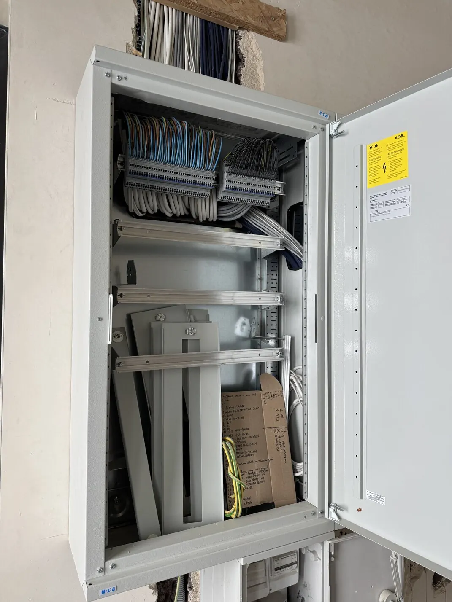
Szafa rozdzielcza w trakcie zabudowy
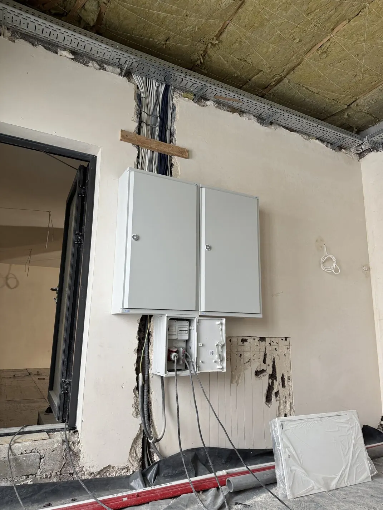
Rozdzielnice na ścianie w stanie surowym
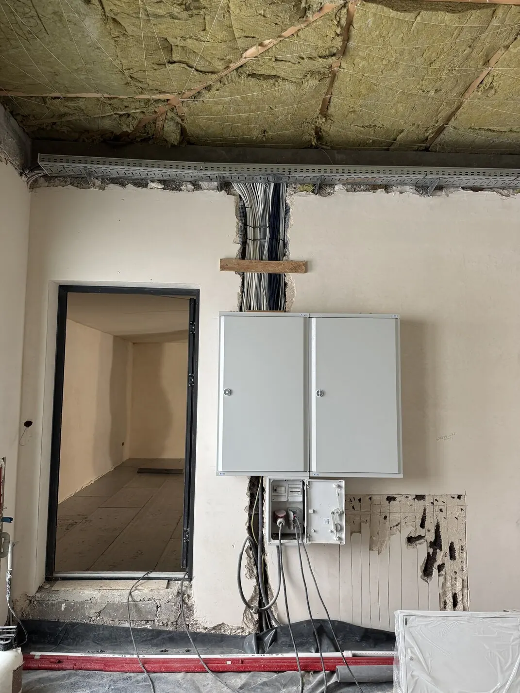
Obudowy rozdzielnic przed tynkowaniem Wiązka przewodów wprowadzona do rozdzielnicy
Wiązka przewodów wprowadzona do rozdzielnicy Instalacja fotowoltaiczna na konstrukcji gruntowej
Instalacja fotowoltaiczna na konstrukcji gruntowej
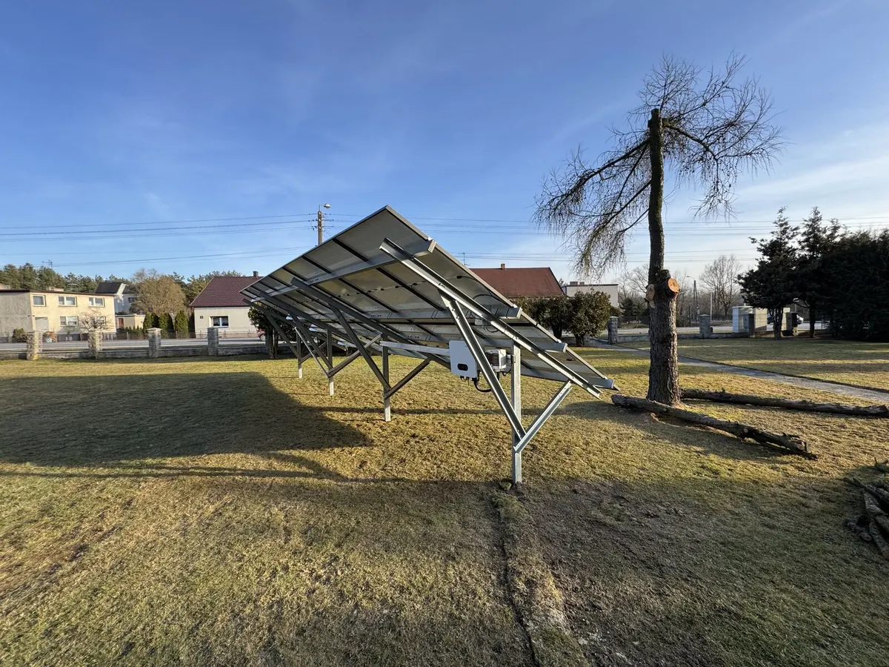
Konstrukcja gruntowa – widok z boku
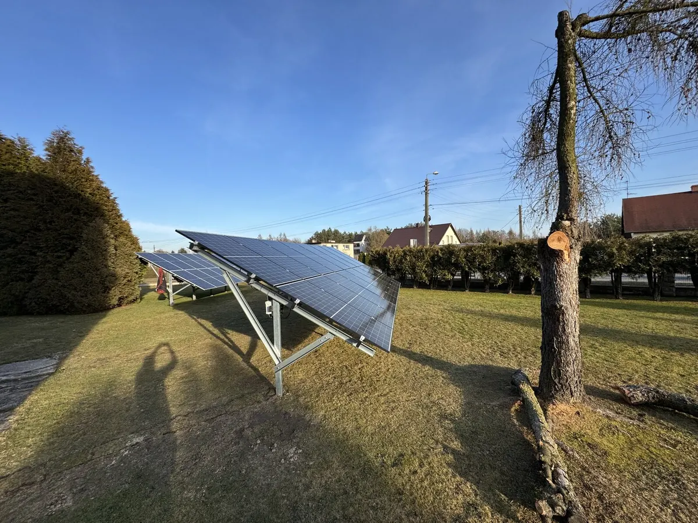
Panele na konstrukcji gruntowej Falownik zamontowany pod konstrukcją paneli
Falownik zamontowany pod konstrukcją paneli Falownik hybrydowy SolaX z rozdzielnicą AC/DC
Falownik hybrydowy SolaX z rozdzielnicą AC/DC
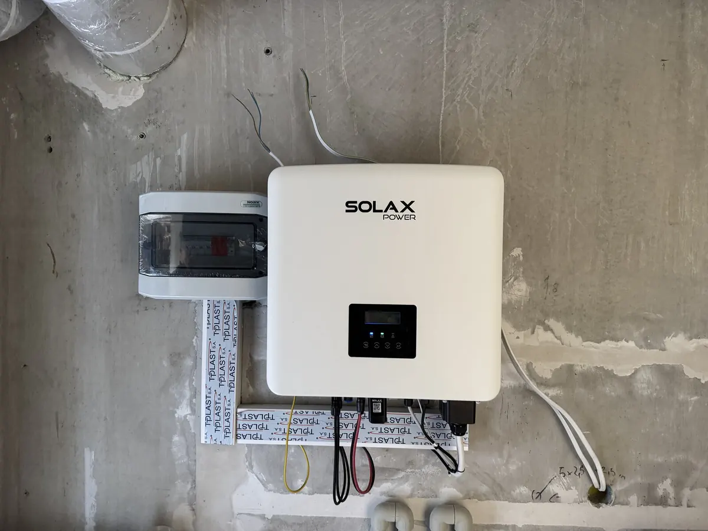
Falownik SolaX po uruchomieniu Magazyn energii – moduły bateryjne
Magazyn energii – moduły bateryjne Falownik Huawei z magazynem energii
Falownik Huawei z magazynem energii
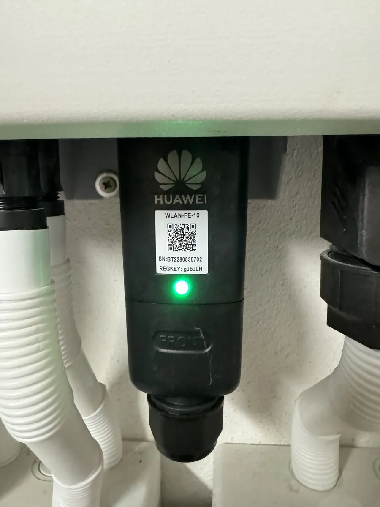
Moduł komunikacyjny Huawei do monitoringu w aplikacji Rozłącznik DC i przyłącza falownika
Rozłącznik DC i przyłącza falownika
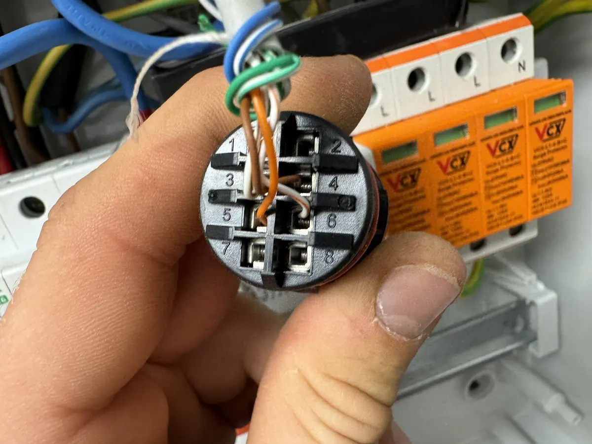
Ograniczniki przepięć i złącze komunikacyjne
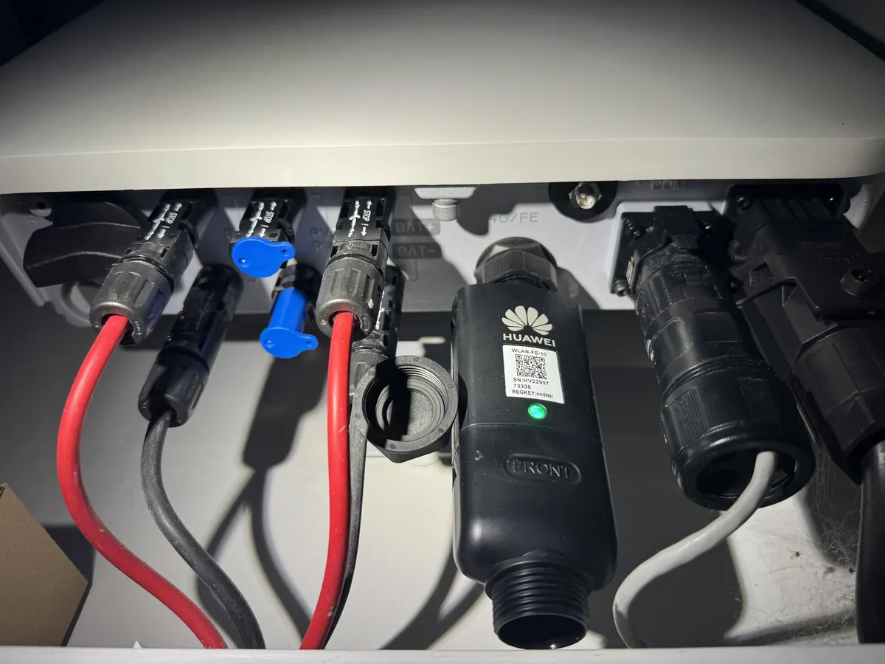
Złącza DC falownika
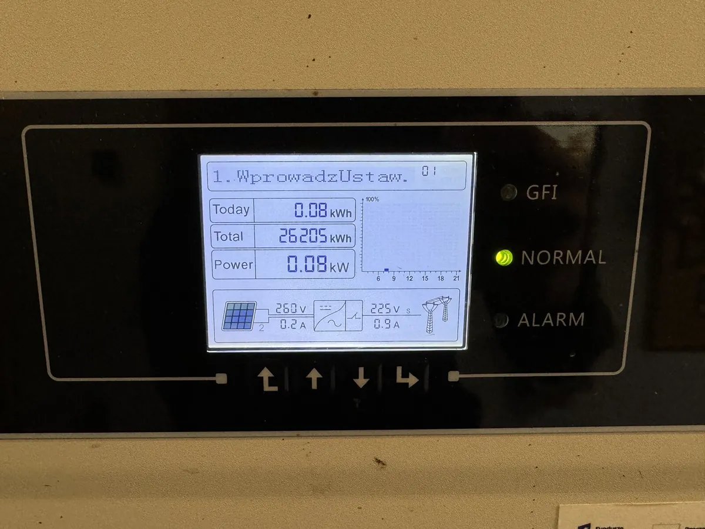
Wyświetlacz falownika – praca w trybie normalnymPorozmawiajmy o inwestycji
Opisz krótko, co budujesz albo co chcesz zmienić. Oddzwonimy, dopytamy o szczegóły i umówimy się na oględziny lub rozmowę nad projektem.
Telefon+48 697 296 018 E-mailbiuro@e-aton.pl